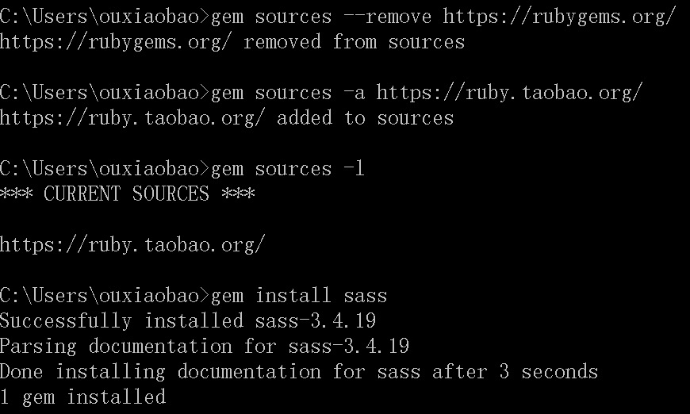

window-scss install
1.ruby安装
sass依赖于ruby环境，所以装sass之前先确认装了ruby。先导官网下载个ruby 在安装的时候，请勾选Add Ruby executables to your PATH这个选项，添加环境变量，不然以后使用编译软件的时候会提示找不到ruby环境

安装完成后需测试安装有没有成功,运行CMD输入以下命令：
ruby -v
//如安装成功会打印
ruby 2.2.2p95 (2015-04-13 revision 50295) [i386-mingw32]
2.sass安装
安装完ruby之后，在开始菜单中，找到刚才我们安装的ruby，打开Start Command Prompt with Ruby

命令行输入
gem install sass
按回车键确认，等待一段时间就会提示你sass安装成功。如果你没有安装成功，可以尝试下面方法，或参考下面的淘宝的RubyGems镜像安装sass，如果成功则忽略。
//1.删除原gem源
gem source --remove https://rubygems.org
//2.添加国内淘宝源
gem source --add http://rubygems.org
//3.打印是否替换成功
gem sources -l
//4.更换成功后打印如下
*** CURRENT SOURCES ***
https://ruby.taobao.org/
如果要安装beta版本的，可以在命令行中输入
gem install sass --pre
你还可以从sass的Git repository来安装，git的命令行为
git clone git://github.com/nex3/sass.git
cd sass
rake install
如下sass常用更新、查看版本、sass命令帮助等命令：
//更新sass
gem update sass
//查看sass版本
sass -v
//查看sass帮助
sass -h
3.淘宝RubyGems镜像安装 sass(安装失败请继续看)
- 由于国内网络原因，导致
rubygems.org存放在Amazon S3上面的资源文件间歇性连接失败。这时候我们可以通过gem sources命令来配置源，先移除默认的https://rubygems.org源，然后添加淘宝的源https://ruby.taobao.org/，然后查看下当前使用的源是哪个
关于常用gem source命令可参看：常用的
gem source
$ gem sources --remove https://rubygems.org/
$ gem sources -a https://ruby.taobao.org/
$ gem sources -l
*** CURRENT SOURCES ***
https://ruby.taobao.org
# 请确保只有 ruby.taobao.org,如果是淘宝的，则表示可以输入sass安装命令了。
$ gem install sass
安装成功截图：

附上：官方安装